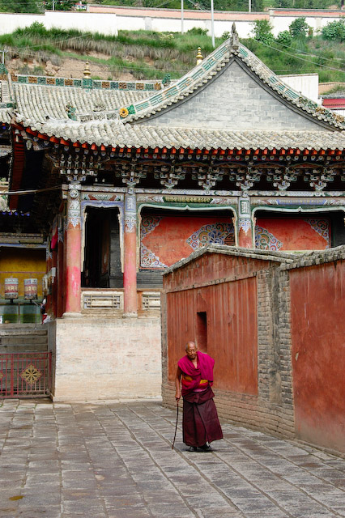
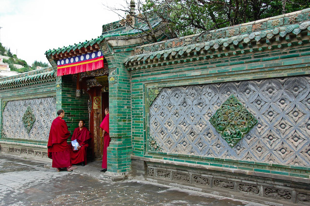
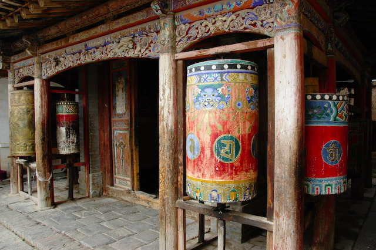
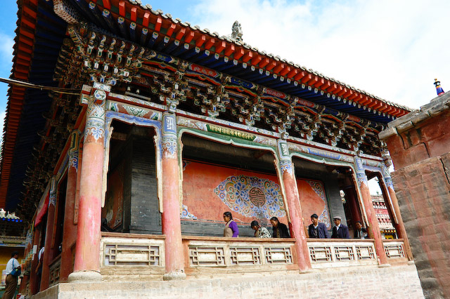
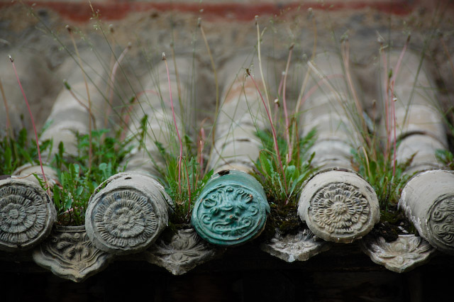

Am Morgen hatten wir das tibetische Plataeu endgültig verlassen. Die Gegend um uns herum war grün bewaldet und wolkenverhangen. Der pfeifende Sauerstoffauslass hatte aufgegeben, was die Ankunft in niedrigerem Gebiet verriet. Die Gegend wird landwirtschaftlich genutzt und ist viel stärker (oder überhaupt) bevölkert. An vielen Stellen sammelten sich Menschen am Bahnübergang, die zur Arbeit oder in die Schule gingen.
Obwohl uns seltsamerweise Tickets bis nach Langhzou gegeben wurden, sind wir vormittags mutig in Xining ausgestiegen. Dort wollten wir ja auch hin. Glücklicherweise wurden wir schon von unserer neuen Führerin erwartet, einem zierlichen chinesischen Mädchen mit gelben Schuhen.
Vom Bahnhof sind wir direkt zum Kumbum-Kloster gefahren, das der Höhepunkt unseres Aufenthalts hier sein sollte. Es liegt etwas außerhalb, so dass wir eine halbe Stunde lang Gelegenheit hatten, uns von der Hässlichkeit Xinings und seiner Vorstädte zu überzeugen. In dieser unbekannten Millionenstadt produzieren die unzähligen Baustellen und Abbruchgelände so viel Staub, dass man sich Regen wünscht.
Das Kloster war den Weg allerdings wert. Es wurde von Tsong Khapa, dem Gründer der Gelugpa (der Gelben Sekte) gegründet, aus deren Linie auch der Dalai und der Panchen Lama stammen. Das Kloster ist weitläufig und im Gegensatz zu seinen tibetischen Pendants von viel Grün umgeben. Es gibt hier besonders viele und besonders schöne Gebetsmühlen, die teils aus Metall, oft aber auch aus bemaltem Holz gemacht sind. In einem Hof sind eigens Hütten für besonders riesige Mühlen errichtet worden, die wiederum von kleineren Gebetsmühlen umgeben sind. Genug, um einen frommen Nachmittag damit zu verbringen.
Neben einer 11m hohen Silber-Stupa, die natürlich dem Gründer gewidmet ist, sind prachtvolle Jak-Butter-Schaustücke der Blickfang des Klosters. In einer klimatisierten Vitrine stehen die mannshohen Buddha-Skulpturen in einem Meer von Blumen, umgeben von umfangreichem Zierwerk — alles aus Butter und hübsch bemalt. Damit die Mönche sich nicht langweilen, wird das Werk jährlich erneuert.
In einem riesigen Hotel haben wir ein geräumiges Zimmer im 17. Stock, das einen gigantischen Ausblick auf die Stadt bietet. Wir sind direkt eingeschlafen. Später hatten wir Gelegnheit das trostlose Bild von Xining etwas zu revidieren. Mit einem immerhin zweisprachigen Stadtplan ausgerüstet haben wir die Stadt dem üblichen Ritual unterzogen, einen Supermarkt zu finden. Tatsächlich sind wir nach einer Weile in ein belebtes Viertel gekommen, das nicht nur Supermärkte, sondern auch einen schönen Straßenmarkt zu bieten hatte. Zwischen den vielen kleinen Geschäften machten sich Baustaub und Ruinenstaub weniger bemerkbar.
    